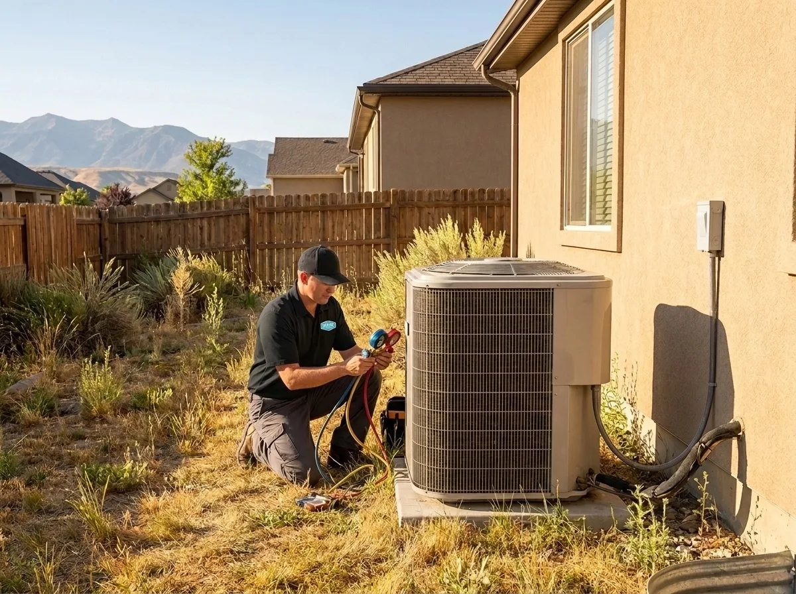
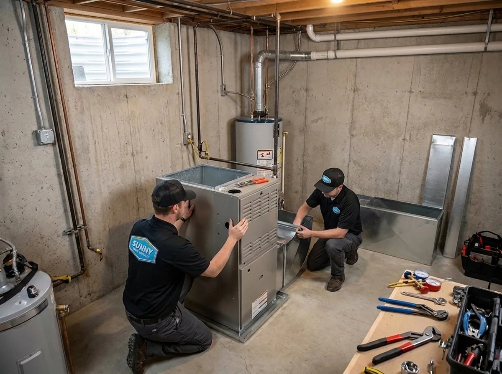

385.853.8116


Frigid winters, dry and hot summers, and a hard water supply all create potential HVAC and plumbing issues for Salt Lake City homeowners. If you live in the Wasatch Front region, Sunny Home Services provides professional heating and cooling in Salt Lake City, UT, for peace of mind. We deliver fast, upfront, technology-driven HVAC and plumbing services with the speed and polish of a big company, and with the honesty and accountability of a local one.

From winter temps that can drop below zero to hot SLC summers that make going outside unpleasant, it’s important to have a heating and air conditioning system you can rely on for long-term comfort. At Sunny Home Services, we provide a variety of HVAC services in Salt Lake City, including system replacements, new installations, expert repairs, and seasonal maintenance designed to keep your home comfort system running all year round.

The Sunny Home Services team provides trusted Salt Lake City AC services for your Wasatch Front-area home, including HVAC repairs, routine AC maintenance, and new air conditioner installations. We focus on servicing and installing a variety of energy-efficient systems, including eco-friendly ductless mini-splits, heat pumps, and more for a cool, comfortable space.
Learn More ›
Cold winter temperatures in our region mean that you need reliable Salt Lake City heating services for a comfortable home. Sunny Home Services provides heating services like emergency heating repairs, new heating system installs, and vital HVAC maintenance to provide you with a safe, warm space. Schedule maintenance twice per year, once in early spring and again in early fall, for fewer breakdowns and longer equipment lifespan.
Learn More ›A heat pump provides energy-efficient heating and cooling in a single unit to make operation and maintenance affordable and easy. Our team proudly installs, maintains, and repairs residential heat pumps to provide you with reliable comfort throughout the changing seasons.
Get optimum energy savings and convenience with a compact ductless mini-split from Sunny Home Services. These eco-friendly units don’t require existing ductwork and feature zoned heating and cooling for maximum temperature control in any room.
Learn More ›Our team provides many indoor air quality (IAQ) services specifically tailored to the unique climate in Salt Lake City. From air duct cleaning to installing whole-home humidifiers, our IAQ services keep humidity levels comfortable and the air inside your home clean and free of harmful airborne contaminants.
Learn More ›Our team provides around-the-clock, 24-hour heating and cooling emergency services with fast response times to address all types of urgent issues. We’re available for same-day services to give you peace of mind and expert help when you need it most. From loud noises coming from your system to no heat or air conditioning whatsoever, trust Sunny Home Services whenever you need prompt emergency air conditioning and heating repairs.
Our team encounters several common HVAC issues in the Salt Lake City area, including uneven heating and cooling due to freezing winters and intense temperature swings that cause short-cycling and excess strain. Low humidity in the Wasatch Front area also leads to uncomfortable spaces. Airborne pollutants often clog air filters, causing IAQ and airflow issues. Blown AC capacitors in SLC are common during intense summer heatwaves, and some furnaces may encounter ignition failure when temperatures dip below freezing.


Upgrading your HVAC system can lower your energy bills thanks to features like variable-speed motors and higher SEER2 and AFUE ratings. Here are some signs that your current system may need to be replaced:
Our licensed Salt Lake City plumbers are available to assist with all of your residential plumbing needs. Several common plumbing issues in the Wasatch Front are due to the hard water in our region that creates excess mineral buildup, leading to clogs or potential pipe damage. If you need help from experienced local plumbers in the area, trust our team for a job done right.
Local homeowners choose Sunny Home Services as their go-to HVAC and plumbing company for many reasons, including:

Sunny Home Services is a local company that understands the unique climate and specific needs of Salt Lake City homeowners, with over 30 years of industry experience combined. To learn more or schedule your HVAC or plumbing service, contact us today!